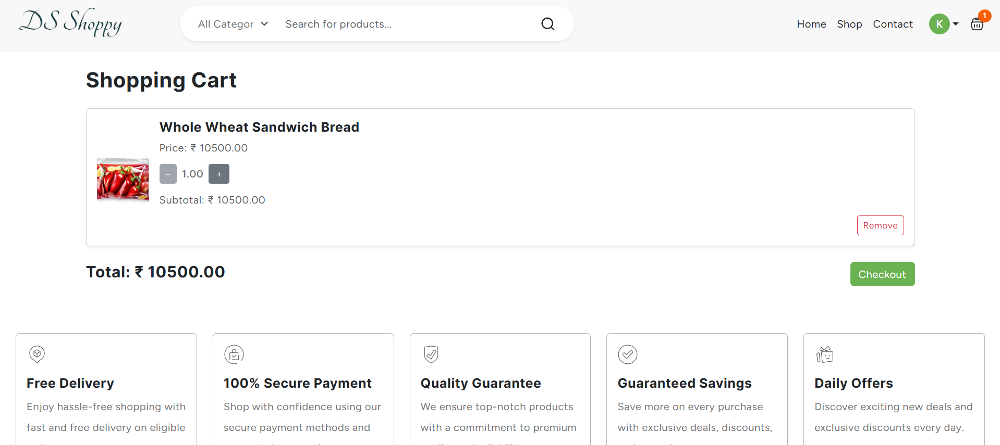
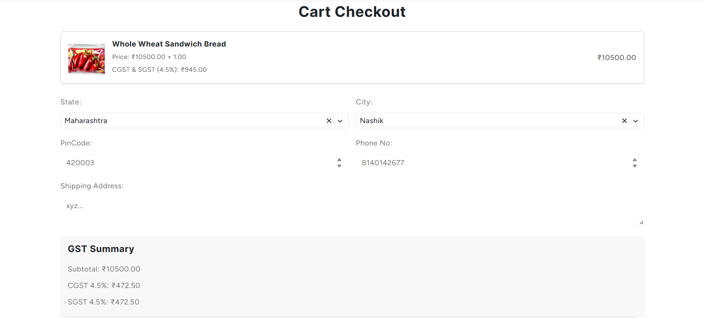

Project overview
An online shopping platform with product discovery, customer accounts, cart and checkout, GST calculations, cashback and referral rewards. This case study outlines the application’s purpose, the functionality developed and the operational context behind the work.
The client problem
DS Shoppy needed an online storefront that could support the complete buying journey while also presenting its daily-order cashback and referral programme clearly to customers.
The solution
We built a responsive e-commerce experience that connects catalogue browsing, search, customer accounts, cart management and checkout. The checkout captures delivery details and presents tax totals, while dedicated promotional content explains the cashback and referral model.
Features developed
- Product catalogue and search
- Category-based browsing
- Customer registration and login
- Shopping cart and quantity updates
- Address-based checkout
- GST calculation and order summary
- Cashback and reward offers
- Referral rewards
Technologies used
Explore our technology stack and development approach.
Our contribution
We developed the storefront and purchase flow, including product discovery, account access, cart interactions, checkout details, GST calculation and the rewards-focused customer experience.
A closer look


Business impact
Customers can move from finding a product to reviewing tax and delivery information in one guided journey. The same platform also gives DS Shoppy a clear place to communicate its rewards programme.